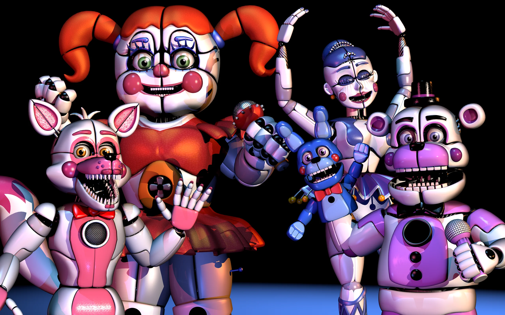

SISTER LOCATION

Beneath the Surface
Deep underground lies a hidden facility built by Afton Robotics. Unlike previous Freddy Fazbear locations, this place was never meant to entertain children openly. Instead, it was designed for experiments involving advanced animatronics.
Facility Overview
Underground Complex
The facility contains multiple interconnected rooms designed to control and maintain animatronics. Each section serves a different purpose, from performance testing to containment.
However, the true purpose of the complex was hidden beneath its surface: to isolate and control experimental animatronics far away from public view.

Circus Baby
Advanced animatronic designed for interaction. Contains the soul of Elizabeth Afton.

Funtime Freddy
Highly interactive animatronic with unstable behavior patterns. Known for unpredictable actions.

Ballora
Elegant performance unit with sound-based navigation system. Operates in complete darkness.
Ennard
Ennard is a fused entity created from multiple animatronics. It represents the collapse of control systems within the facility, where machines begin to act as a single, unstable organism.